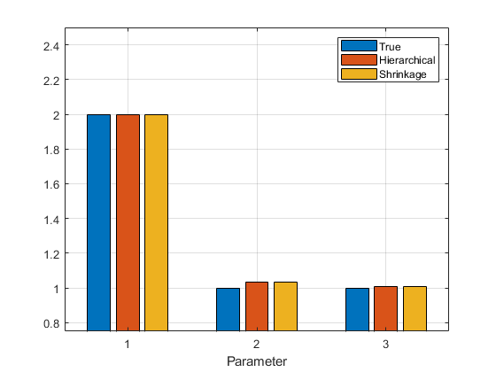
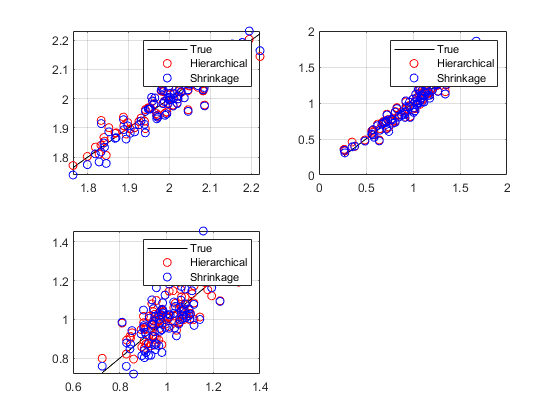
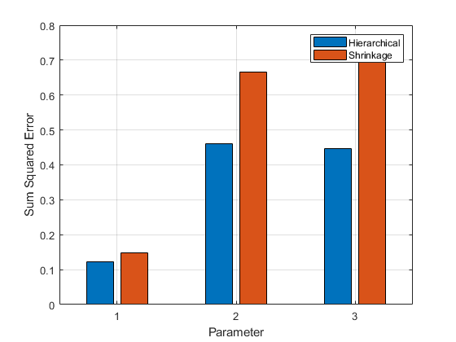
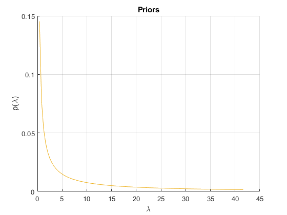
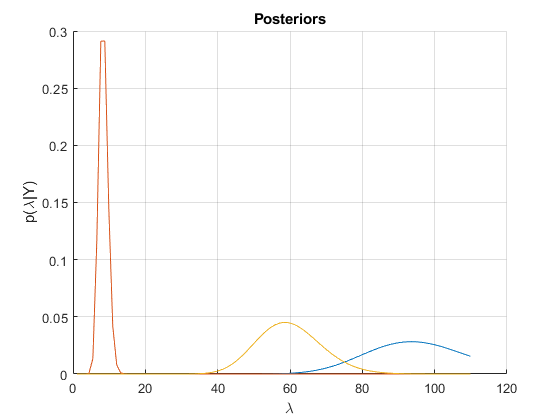

clear all
close all
sim.v = [2,1,1];
sim.Lambda = diag([100 10 100]); sim.C = inv(sim.Lambda);
sim.N = 5;
sd = 0.1;
sim.lambda = 1/(sd^2);
P = length(sim.v);
hier.mu0 = zeros(P,1);
hier.S0 = 0.01*eye(P);
[M,U] = linear_model (sim.N,sim.lambda);
Nsub=90;
w_tmp = spm_normrnd(sim.v,sim.C,Nsub);
Yall=[];
for s=1:Nsub,
model{s}.w_true = w_tmp(:,s);
model{s}.Y = U.X*model{s}.w_true+sqrt(M.Ce)*randn(sim.N,1);
Yall = [Yall,model{s}.Y];
end
plot_data=0;
if plot_data
rN = ceil(sqrt(Nsub));
for s=1:Nsub,
subplot(rN,rN,s);
plot(U.t,model{s}.Y,'x');
ylim([0 max(max(Yall))]);
grid on
end
end
for s=1:Nsub,
model{s}.M = M;
model{s}.U = U;
model{s}.mu = M.pE;
model{s}.S = inv(M.pC);
end
tight_prior=0;
if tight_prior
sigma0 = 1.68;
mean_prec = ones(P,1)*(1/sigma0)^2;
var_prec = 0.01*ones(P,1);
hier.b0 = mean_prec./var_prec;
hier.a0 = hier.b0.*mean_prec;
end
[model,hier,D,F] = vbmfx(model,'linear_fit',hier);
indiv_mu = mean(D.w_indiv')';
h=figure;
set(h,'Name','Group Level');
P = length(sim.v);
rN = ceil(sqrt(P));
for p=1:P,
theta(p,:) = [sim.v(p),hier.mu(p),indiv_mu(p)];
end
bar(theta);
legend('True','Hierarchical','Shrinkage');
grid on
ylim([0.75*min(sim.v) 1.25*max(sim.v)]);
xlabel('Parameter');
h=figure;
set(h,'Name','Subject Level');
for p=1:P,
subplot(rN,rN,p);
x = sort(w_tmp(p,:));
plot(x,x,'k-');
hold on
plot(w_tmp(p,:),D.w_hier(p,:),'ro');
plot(w_tmp(p,:),D.w_indiv(p,:),'bo');
grid on
legend('True','Hierarchical','Shrinkage');
end
disp(' ');
disp('Errors in within-subject parameter estimates:');
for p=1:P,
e=D.w_hier(p,:)-w_tmp(p,:);
Eh = sum(e.^2);
e=D.w_indiv(p,:)-w_tmp(p,:);
Es = sum(e.^2);
disp(sprintf('Parameter %d SSE: Hier = %1.3f, Shrinkage = %1.3f',p,Eh,Es));
sse(p,:) = [Eh,Es];
end
h = figure;
set(h,'Name','Within Subject Error');
bar(sse);
legend('Hierarchical','Shrinkage');
grid on
xlabel('Parameter');
ylabel('Sum Squared Error');
disp(' ');
disp('Prior and Posterior Group Precisions:');
vbmfx_plot_precisions (hier);
Iteration 2 propchange = 0.0000
MFX outer loop 1 ...
Iteration 2 propchange = 0.0000
Errors in within-subject parameter estimates:
Parameter 1 SSE: Hier = 0.123, Shrinkage = 0.147
Parameter 2 SSE: Hier = 0.460, Shrinkage = 0.667
Parameter 3 SSE: Hier = 0.446, Shrinkage = 0.732
Prior and Posterior Group Precisions:
Mean = 10.000 SD = 31.623
Mean = 10.000 SD = 31.623
Mean = 10.000 SD = 31.623
Mean = 95.658 SD = 14.244
Mean = 8.418 SD = 1.253
Mean = 59.907 SD = 8.921
    